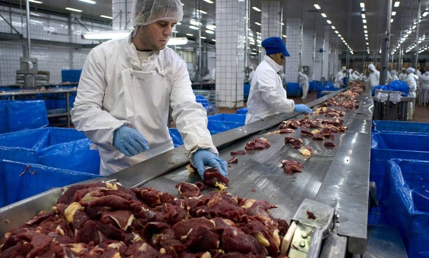

A polícia Civil informou que localizou o corpo de Gabrielly Gomes Santana, de sete anos, desaparecida há três meses, na cidade de Feira de Santana, a cerca de 100 km de Salvador. Em coletiva realizada na manhã do dia 26 de abril, a Polícia Civil informou que desvendou o caso através de exames feitos com a polpa do dente de um crânio encontrado no dia 14 de fevereiro, no bairro Feira Nove, e que comprovou ser da menina. O crânio estava queimado, jogado num terreno baldio.
A criança havia sido vista pela última vez no dia 21 de janeiro, no bairro Gabriela, e o paradeiro da menor era desconhecido desde então. Após o desaparecimento, a avó da garota, Maria da Glória Costa Gomes, contou que Gabrielly brincava sozinha quando sumiu. "Eu fiquei de olho nela, mas em um momento fui lavar o banheiro e disse: 'não saia daí, não vá na casa de ninguém'. Quando saí na porta, não a encontrei e fui na casa das vizinhas que ela costuma brincar. Quando cheguei, as crianças estavam dormindo e, em algumas casas, a família nem estava. Foi aí que vimos que ela tinha desaparecido", contou a avó. A avó morava com a menor desde que a criança tinha dois anos, porque a mãe da garota, Jeisa Costa Gomes, trabalha.
Uma única aposta de Jaciara (MT) acertou as seis dezenas dezenas do concurso 1.924 da Mega-Sena, cujo sorteio foi realizado na noite desta quarta-feira (19) em Franco da Rocha (SP), e ganhou R$ 101,5 milhões.
Veja as dezenas sorteadas: 12 - 16 - 30 - 52 - 53 - 58.
O valor exato do prêmio é R$ 101.484.527,44. A quina teve 188 acertadores, e cada um levou R$ 41.109,03. Outras 11.382 apostas ganharam a quadra, com R$ 970,01 para cada uma.
Angola e Iêmen reabriram seus mercados à carne do Brasil, disse o Ministério da Agricultura no mês de abril, após receber comunicado oficial dos países, que ainda mantinham suspensão parcial às importações de produtos brasileiros. Segundo a nota do ministério, os países "resolveram apenas intensificar a inspeção dos produtos que chegam ao país".
As importações haviam sido suspensas em março, mês em que a Operação Carne Fraca, da Polícia Federal, revelou um suposto esquema de propinas a inspetores sanitários em algumas unidades frigoríficas das maiores empresas de carne do país. Quinze países ainda mantêm suspensão total sobre as importações brasileiras, enquanto 38 países continuam com a suspensão parcial ou adotaram uma inspeção reforçada sobre os produtos brasileiros, incluindo os Estados Unidos, China e Rússia, segundo relação divulgada pelo ministério na terça-feira (25 de abril).
O jornalista, professor e advogado Carlos Chagas morreu nesta quarta-feira (26) aos 79 anos de idade. Chagas era pai de Helena Chagas, ex-ministra da Secretaria de Comunicação no governo Dilma Rousseff. A morte foi confirmada pela filha no Twitter. Ele sofreu um aneurisma na aeorta.
Carlos Chagas se formou em direito na PUC-RJ (Pontifícia Universidade Católica do Rio Janeiro) e lecionou UnB (Universidade de Brasília) por 25 anos. No jornalismo, começou a carreira no diário carioca O Globo em 1958. Também trabalhou por 18 anos no jornal O Estado de S. Paulo, além de passagens pelas TVs Manchete, Rede TV!, SBT e CNT. Chagas também trabalhou no governo federal, quando foi porta-voz da gestão Costa e Silva.
O jovem Luiz Carlos Cerqueira Inácio Filho, 23 anos, foi morto com um tiro no abdômen após a chegada da Polícia Militar em um baile funk no Jardim Gaivotas, região do Grajaú, zona sul de São Paulo, na manhã do domingo de Páscoa (16). Um dos irmãos de Luiz, de 22 anos, que não quis se identificar, afirmou que o jovem não estava na multidão que participava do baile funk no momento quando foi baleado. “Ele estava parado na rua de cima”, disse ele.
Ainda segundo o irmão, o PM suspeito de atirar contra Luiz era um integrante da Rocam (Ronda Ostensiva com Apoio de Motocicletas). Já as investigações da Polícia Civil do 101º DP (Jardim das Imbuias) apontam que os disparos realizados no baile funk foram efetuados pelos soldados Falcão (quatro) e Fernandes (dois), que estavam nas viaturas M27012 e M27016, acompanhados dos também soldados da PM Ferreira Lima e Seraphim.
Em nota assinada pelos pastores batistas Joel Zeferino, Marcos Adoniram Lemos Monteiro e Nívia Souza Dias, a Aliança de Batistas do Brasil repudia o teor do projeto de reforma da Previdência. Para os religiosos, a proposta do governo Temer se soma a uma série de outros projetos que consideram injustos por "desequilibrar ainda mais a relação capital-trabalho", estruturalmente danosos para o trabalhador e para a classe mais pobre e ainda embute uma "crueldade genocida".
Eles criticam o que chamam de cumplicidade da mídia conservadora, que mesmo diante de resistências e protestos de grande parcela da sociedade civil, apresenta a reforma de "modo adocicado", demonstrando mais uma vez a leniência e parcialidade dos meios de comunicação. "O projeto tem sido apresentado como um evangelho, anúncio de salvação da pátria e do povo brasileiro", afirmam os pastores. "A palavra evangelho é muito cara para nós, batistas. Denunciamos, então, esse projeto como um falso evangelho ou como um dysangelho, divulgação de um tipo de mundo contrário ao desejado por Deus."
Na manhã do dia 26 de abril, o plenário do Conselho Nacional dos Direitos Humanos (CNDH) aprovou, por unanimidade, recomendação contra o Projeto de Lei (PL) 6.787, da “reforma trabalhista”. O órgão recomenda ao presidente da República a retirada do projeto, e aos presidentes da Câmara e do Senado, e ao relator que a proposta tenha tramitação em rito ordinário, "garantindo assim amplo debate público, diante de mais de 100 alterações propostas no âmbito da CLT". O substitutivo ao PL tramita em regime de urgência.
Para o presidente do Conselho, o discurso adotado pelos defensores das alterações na legislação trabalhista busca esconder os seus impactos negativos. "A reforma utiliza a cortina de fumaça da chamada modernidade mas, na verdade, abre o caminho para o que hoje se chama de escravidão moderna, que é você precarizar as relações de trabalho e ampliar a possibilidade da super exploração. Essa é uma modernização que nos leva não ao futuro, mas a um passado que não queremos mais que volte."
O juiz Sérgio Moro determinou o adiamento do depoimento do ex-presidente Luiz Inácio Lula da Silva para o dia 10 de maio, às 14h. A decisão atende a pedidos da Secretaria de Segurança Pública do Paraná e da Polícia Federal, que reivindicaram mais tempo para "providências de segurança".
No despacho dessa decisão, Moro reconhece a possibilidade das mobilizações, e diz que manifestações são permitidas "desde que pacíficas": "É possível que, na data do interrogatório, ocorram manifestações favoráveis ou contrárias ao acusado em questão, já que se trata de uma personalidade política, líder de partido e ex-Presidente da República."
O depoimento de Lula a Moro se dá em ação no âmbito da operação Lava Jato em que o ex-presidente é acusado de ser dono de um apartamento no Guarujá, obtido da empreiteira OAS como vantagem em troca de benefícios em contratos com o governo, e de ilegalidades no armazenamento de seu acervo presidencial. A defesa de Lula nega as acusações.

Por determinação do ministro da Justiça, Osmar Serraglio, a PF (Polícia Federal) vai investigar o jogo virtual “Baleia Azul”, que pode estar levando jovens a mutilações corporais e até ao suicídio. O jogo é praticado em comunidades fechadas de redes sociais como Facebook e Whatsapp e instiga os participantes, em maioria adolescentes, a cumprirem 50 tarefas, sendo que a última delas é o suicídio.
De acordo com o Ministério da Justiça, a medida foi tomada após apelos feitos a Serraglio pelo prefeito de Curitiba, Rafael Greca, e pelos deputados federais Laudívio Carvalho (SD-MG), Carmem Zanoto (PPS-SC), Pollyana Gama (PPS-SP) e Eliziane Gama (PPS-MA).
Pelo menos três mortes suspeitas de estarem relacionadas ao suposto jogo já são investigadas pelas autoridades locais de Belo Horizonte, Pará de Minas (MG), Arcoverde (PE). No Rio de Janeiro, a Polícia Civil investiga, pelo menos, quatro casos suspeitos, todos envolvendo adolescentes a prática do jogo no estado.
Os desembargadores da Primeira Turma do Tribunal Regional Federal decidiram, por maioria de votos, na manhã do dia 26, que a ex-primeira-dama do Rio de Janeiro Adriana Ancelmo deve voltar para a cadeia. Ela será levada para o Complexo Penitenciário de Gericinó, em Bangu.
Adriana Ancelmo é acusada de participar do esquema milionário de corrupção encabeçado pelo marido no Estado. No pedido de prisão, o MPF alega que "ADRIANA e sua organização estão, no momento, ocultando e movimentando valores de forma a impedir sua apreensão, o que demonstra, extreme de dúvidas, a necessidade da custódia cautelar para garantia da ordem pública".
Os movimentos sociais e centrais sindicais convocaram para o dia 28 uma greve geral nacional contra a reforma da Previdência e mudanças na legislação trabalhista propostas pelo governo Michel Temer. Segundo os sincatos, espera-se que a greve seja geral, ou seja, una diferentes categorias profissionais em vários Estados da federação em prol de uma única causa e que elas, juntas, parem o país.
O último movimento que teve a proposta de paralisar o Brasil, ocorrido em 15 de março, apesar de ter sido nacional, não tinha a proposta de ser uma greve. "Em alguns lugares, acabou sendo. A ideia inicial era fazer assembleia na porta das fábricas, mobilizar os trabalhadores, atrasar o trabalho, mas não paralisar de fato, o que acabou acontecendo em algumas categorias", explicou João Cayres, secretário-geral da Central Única dos Trabalhadores(CUT) em São Paulo.

Um grupo de estudantes cearenses foi selecionado para participar da Feira Nacional de Empreendedorismo, que acontece na sexta-feira (26), em Londrina, no estado do Paraná. Com o projeto de um salão de beleza itinerante, os alunos do curso de administração de empresas venceram a etapa local e se credenciaram para participar da final do concurso.
O evento é organizado pelo Centro Brasileiro de Cursos (Cebrac), uma rede de ensino profissionalizante. Durante o curso, os alunos criam empresas fictícias, para colocar em prática o aprendizado na área. É feita uma seleção local e os melhores projetos vão disputar a final em Londrina, onde concorrem a um prêmio de R$ 2.500. Os alunos cearenses montaram o projeto de um salão de beleza itinerante, chamado de "Camarim". A ideia é fazer com que o salão percorra a cidade, atendendo em diferentes regiões.
Um adolescente foi apreendido, no dia 25 de abril, no Bairro Serrinha, em Fortaleza, transportando explosivos. A Polícia Militar chegou até ele depois de uma ligação para o disque denúncia.
Com as características do adolescente, a polícia fez a abordagem e encontrou o material em uma mochila. Segundo a polícia, eram cinco explosivos. Ainda de acordo com a polícia, o adolescente já responde dois atos infracionais por tráfico de drogas e posse ilegal de armas.
A polícia informou que ele foi levado para a delegacia especializada. Já os explosivos foram levados pelo Grupo de Ações Táticas Especiais (Gate), para um local seguro, onde serão detonados.
A copa América de 2019 será disputada em sete cidades e oito estádios. Como o GloboEsporte.com revelou, a competição será disputada por 16 seleções – as 10 que formam a Conmebol e mais seis convidados, ainda por definir.
Há seis cidades definidas: São Paulo, Rio de Janeiro, Belo Horizonte, Brasília, Salvador e Porto Alegre. A sétima sede está entre Fortaleza e Recife – com favoritismo claro, neste momento, para a capital do Ceará.
Essas decisões estão tomadas, mas não serão anunciadas de maneira oficial até que o Comitê Organizador Local da Copa América de 2019 seja formalizado. Desde o início, o plano dos organizadores do torneio era concentrar os jogos no Sul e no Sudeste do Brasil para evitar deslocamentos longos das seleções. Com o aumento para 16 equipes, o "mapa" do torneio foi ampliado.
Três irmãos, de 3, 10 e 16 anos anos, morreram durante o temporal em Itajaí na madrugada do dia 26 (quarta-feira). A chuva e vendaval atingiram várias regiões de Santa Catarina e mais de 50 ocorrências foram registradas, segundo o Corpo de Bombeiros.
A mãe grávida e os filhos teriam saído de casa por medo do destelhamento, conforme a RBS TV. Os quatro levaram um choque elétrico após um poste cair - um fio energizado estava em uma poça e eles pisaram na água. Inicialmente, o Corpo de Bombeiros e a Defesa Civil haviam dito que um homem era uma das vítimas, mas a informação foi retificada mais tarde.
A astronauta Peggy Whitson, de 57 anos, se tornou a americana a passar mais tempo no espaço. Peggy completou 534 dias, 2 horas e 49 minutos no espaço, na manhã de 24 de maio, ao longo de três missões de longa duração a bordo da Estação Espacial Internacional (ISS), batendo o recorde do astronauta Jeff Williams.
Nesta mesma manhã, o presidente Donald Trump e sua filha Ivanka ligaram para a ISS para congratular Peggy, em uma conversa transmitida ao vivo pela TV Nasa. Durante a convesa, Trump parabenizou a astronauta e afirmou que estava muito orgulhoso de seu feito.


Um menino de 11 anos morreu nesta segunda-feira (24) e outros sete ficaram feridos após a explosão de uma granada que um aluno levou para o colégio na República do Daguestão, informaram as autoridades dessa república da federação russa. O aluno que levou uma granada para a aula foi detido.
"Segundo disse aos investigadores, ele encontrou a granada na rua e a levou à sala de informática", onde depois explodiu o artefato, apontaram fontes do Ministério.
Imagens veiculadas pela TV estatal KRT nesta quarta-feira (26) mostram o exercício militar de artilharia com fogo real realizado pela Coreia do Norte no 85º aniversário da fundação de seu Exército. As imagens mostram que um grande número de unidades de artilharia foram mobilizadas na região de Wonsan, em sua costa leste. Segundo o Exército da Coreia do Sul, as artilharias são de longo alcance. Jornalistas independentes não tiveram acesso para cobrir o evento registrado nas imagens.
Fontes da agência sul-coreana "Yonhap" disseram nesta terça que este foi "o maior exercício de tiros" até agora. O líder norte-coreano Kim Jong-un teria participado das manobras, onde teria testado artilharia de longo alcance, de acordo com uma fonte do governo citada pela agência.

União Europeia concedeu em 2016 proteção a mais de 700 mil solicitantes de asilo, dos quais quase 390 mil obtiveram o status de refugiado, indicou em abril deste ano o escritório europeu de estatísticas Eurostat, ressaltando que mais da metade são sírios.
"Os 28 Estados membros da UE concederam o status protetor a 710.400 solicitantes de asilo em 2016, mais do dobro em relação a 2015", indicou o Eurostat em um comunicado, ressaltando que o número de decisões sobre os solicitantes da Síria também dobrou em comparação com o ano anterior.
A Alemanha foi o país europeu que concedeu o maior número de status de proteção em 2016, 445.210 (mais de 60% do total), seguida de Suécia (69.350), Itália (35.450), França (35.170), Áustria (31.750) e Holanda (21.825). A Espanha concedeu, por sua vez, 6.875 e Portugal um total de 320.
Além disso, a Alemanha concedeu mais de 70% das medidas de proteção acordadas aos cidadãos sírios que fogem da guerra em seu país, que já deixou desde 2011 mais de 320 mil mortos e obrigou a metade dos 22 milhões de sírios a abandonar seus lares.
Milhares de manifestantes invadiram, em 27 de abril, o parlamento da Macedônia e agrediram vários deputados da oposição, entre eles o líder do partido social-democrata SDSM, Zoran Zaev.
Os manifestantes entraram na Câmara após a divulgação da notícia que o SDSM, junto com os três partidos albaneses com representação parlamentar, tinha eleito um novo presidente do parlamento após o fim da sessão regulamentar.
Um casal de Illinois, nos EUA, morreu com menos de uma hora de diferença, depois de passar 69 anos junto.
As informações são do jornal americano Daily Herald. Parentes do casal disseram se sentir melhor ao saber que eles ficaram juntos até o fim. Isaac e Teresa também foram enterrados juntos.
Uma câmera flagrou um tubarão comendo uma carcaça de uma baleia durante 12 horas.
A carcaça estava sendo rebocada para evitar que chegasse à costa.
A baleia-jubarte morreu por causa de ferimentos desconhecidos perto de uma praia na Califórnia.
Apelidada de Scarlet por causa da cor avermelhada, ela era conhecida na região.
A série de animação "Simpsons" fez um "balanço" irônico dos 100 dias do governo do presidente americano Donald Trump.
No trecho da 28ª temporada, Trump aparece, numa Casa Branca sombria e caótica, gabando-se de ter melhorado seu desempenho no golfe e aumentado seu número de seguidores no Twitter. Seu característico cabelo, na versão dos Simpsons, é um cachorro.
A protagonista da série Marge, preocupada com o fato de ter que suportar a presidência de Trump por 4 anos, aparece tomando calmantes. Seu marido Homer a tranquiliza: "tenha paciência com ele, ele tem apenas 70 anos".